Wine by country - March 3 Release
 |
|
|
|
|
|
| Ontario |
 |
HENRY OF PELHAM GEWÜRZTRAMINER 2005
VQA Niagara Peninsula
According
to winemaker Ron Giesbrecht, Gewürztraminer yields were particularly
low for the 2005 which means more concentrated flavours in this spicy
aromatic wonder. Intense aromas of lychee, citrus and spices dominate
this rich, full-bodied wine. The perfect match for spicy Thai food or
smoked salmon.
268359 (D) 750 mL $17.95 
|
 |
VQA ON Tour
LE CLOS JORDANNE LE CLOS JORDANNE VINEYARD CHARDONNAY 2004
VQA Niagara Peninsula
Tasting Note: Yellow straw; caramel, citrus and peach bouquet;
full-bodied, lovely mouth feel, wonderful balance and great length. A
terrific Chardonnay. Score - ****1/2 (out of 5). (Tony Aspler, www.tonyaspler.com, Oct. 17, 2006)
033910 (D) 750 mL $35
|
 |
VQA ON Tour
LE CLOS JORDANNE LE GRAND CLOS CHARDONNAY 2004
VQA Niagara Peninsula
Tasting Note: Golden straw colour; minerally, apple and lemon,
more Burgundian than the other three; full-bodied, but elegant with
great length. Still young and very cellar-worthy. Score - ***** (out of 5). (Tony Aspler, www.tonyaspler.com, Oct. 17, 2006)
034561 (D) 750 mL $55 
|
 |
VQA ON Tour
LE CLOS JORDANNE VILLAGE RESERVE CHARDONNAY 2004
VQA Niagara Peninsula
Tasting Note: Deeply coloured yellow straw; caramel, vanilla,
butter, orange and peach flavours rise from the glass; full-bodied,
fresh acidity with a caramel and citrus finish. Score - **** (out of 5). (Tony Aspler, www.tonyaspler.com, Oct. 17, 2006)
033936 (D) 750 mL $25
|
| Ontario |
 |
CAVE SPRING GAMAY RESERVE 2004
VQA Niagara Peninsula
Tasting Note: All the peppery, provencal herb, strawberries and
cherries make you think Southern Rhone Grenache rather than Gamay. Why?
The combination of low yields and long hang time has seriously kicked
up the quality. Perfect for grilled quail or antipasto platters. Now to
2009. Score - 88. (Evan Saviolidis, www.winesavvy.ca, July 2006)
289082 (XD) 750 mL $19.95
|
 |
VQA ON Tour
LE CLOS JORDANNE CLAYSTONE TERRACE PINOT NOIR 2004
VQA Niagara Peninsula
Tasting Note: Ruby colour; high toned, minerally, vanilla,
raspberry and mint notes; elegant yet powerful, lovely acidity, firmly
structured with a tannic lift on the finish. Score - ****1/2; with bottle age probably ***** (out of 5). (Tony Aspler, www.tonyaspler.com, Oct. 17, 2006)
033951 (D) 750 mL $35
|
 |
VQA ON Tour
LE CLOS JORDANNE LA PETITE VINEYARD PINOT NOIR 2004
VQA Niagara Peninsula
Tasting Note: The lightest, most elegant of the single vineyard
pinots is from a smaller, sandy soiled site two kilometers east to the
main sites. It is very fine, fragrant and elegant – a real charmer with
floral perfume, sweeter cherry-cranberry fruit and finely knit oak
spice and a trace of mint as surprising as it is pleasant. Light to
medium bodied, well harmonized, almost silky and very long. Best 2007
to 2012. Score - 91. (David Lawrason, Wine Access, “Lawrason E-Report”, Dec. 9, 2006)
033944 (D) 750 mL $35
|
 |
VQA ON Tour
LE CLOS JORDANNE LE CLOS JORDANNE VINEYARD PINOT NOIR 2004
VQA Niagara Peninsula
Tasting Note: ... this site up against the escarpment has heavily
sedimentation and limestone gravel soils. More structure and a sense of
in-filled middle palate, moving it into medium bodied range. Nicely
ripe cherry nose with smoky, toasty oak, spicy leather and a touch of
volatility. Needs a bit of time but it is well proportioned; with
excellent length. Score - 90. (David Lawrason, Wine Access, “Lawrason E-Report”, Dec. 9, 2006)
033902 (D) 750 mL $35
|
 |
VQA ON Tour
LE CLOS JORDANNE LE GRAND CLOS PINOT NOIR 2004
VQA Niagara Peninsula
Tasting Note: ... this immediately shows better fruit definition,
richness and length than its peers. Much better length – quite
remarkable length. The best length I can remember from pinot noir in
Canada or many other places. But it is still restrained and
fine-pointed. Expect classic, fragrant raspberry-cranberry fruit,
beetroot, French oak spice. It's medium bodied, elegant and firm with
focus fruit from start to finish. Did I mention the great finish? Best
2008 to 2015. Score - 93. (David Lawrason, Wine Access, “Lawrason E-Report”, Dec. 9, 2006)
034553 (D) 750 mL $60
|
 |
VQA ON Tour
LE CLOS JORDANNE VILLAGE RESERVE PINOT NOIR 2004
VQA Niagara Peninsula
Tasting Note: (a blend of four vineyards): Ruby colour; earthy,
beetroot and violet nose, high toned; sweet fruit, raspberries with
vanilla oak just present; firm structure and good length. Score -
****1/2 (out of 5). (Tony Aspler, www.tonyaspler.com, Oct. 17, 2006)
033894 (D) 750 mL $25
|
|
|
|
|
|
|
| California |
 |
CLOS PEGASE MITSUKOS VINEYARD CHARDONNAY 2005
Carneros, Napa Valley
This
gorgeous Chardonnay from the cool Carneros district is packed with rich
pear and melon fruit flavours along with fascinating notes of ginger
and hazelnuts. Full-bodied, dry and well-balanced, it's drinking well
now but should improve over the next four years.
986737 (D) 750 mL $32.95
|
 |
KENDALL-JACKSON VINTNER'S RESERVE CHARDONNAY 2005
California
Tasting Note: Eighty-nine percent of the 2005 Vintner's Reserve
Chardonnay Jackson Estates is aged 6 months in barrel with malolactic
fermentation, which is pretty amazing considering the quantity and the
sources. It is all coastal vineyards owned by Jess Jackson, with
Monterey and Santa Barbara fruit composing three-fourths of the blend,
and the rest from Mendocino. 2005 continues their streak of top-notch
wines. Loads of tropical fruit, surprisingly deep texture, medium body,
and wonderful purity results in a crisp, elegant, dry Chardonnay. It is
ideal for drinking over the next 1-2 years. Score - 89. (Robert Parker Jr., www.erobertparker.com, Dec. 2006)
369686 (D) 750 mL $19.95 
|
| Washington State |
| 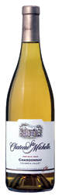 |
CHATEAU STE. MICHELLE CHARDONNAY 2004
Columbia Valley
Tasting Note: Lighter than most Chardonnays, with gentle apple,
citrus and mint aromas and flavors that persist on the polished finish.
Drink now. Score - 88. (Harvey Steiman, www.winespectator.com, June 30, 2006)
232439 (D) 750 mL $17.95
|
| California |
| 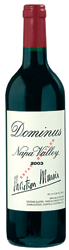 |
DOMINUS 2003
Estate Bottled, Napa Valley
Tasting Note: The 2003 Dominus has turned out even better than I
thought from barrel. ... 88% Cabernet Sauvignon, 7% Cabernet Franc, and
5% Petit Verdot blend. A big, sweet nose of roasted coffee, Provencal
herbs, black currants, cherry jam, plums, allspice, and forest floor is
followed by a spicy, rich, full-bodied, fragrant, intense wine. The
tannins are sweet, but noticeable in this beautifully complex,
strikingly aromatic 2003. It has much more similarity to a great
Bordeaux than anything from Napa Valley. Anticipated maturity:
2007-2025. Score - 95. (Robert Parker Jr., www.erobertparker.com, Dec. 2005)
703850 (XD) 750 mL $104.95
|
| 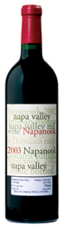 |
DOMINUS NAPANOOK 2003
Estate Bottled, Napa Valley
Tasting Note: The second wine[of Dominus], the 2003 Napanook is a
blend of 91% Cabernet Sauvignon, 4% Cabernet Franc, and 5% Petit Verdot
and Malbec. It offers a dark plum/garnet color as well as an evolved
but intriguing nose of cedar, spice box, high quality cigar smoke,
sweet currants, incense, red cherries, plums, and black currants.
Complex with excellent concentration, beautiful balance, and sweet
tannin, it can be drunk now or cellared for another 10-15 years.
Score - 90. (Robert Parker Jr., www.erobertparker.com, Dec. 2005)
703017 (XD) 750 mL $43.95
|
| 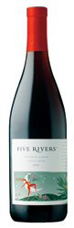 |
Arrive in Style
FIVE RIVERS PINOT NOIR 2005
Central Coast
This
Pinot from Five Rivers is a consistent overachiever offering terrific
value vintage after vintage. This wine offers straight-forward sweet
cherry fruit with cola notes and hints of spice. Dry and medium-bodied,
it's a great introduction to the variety that's bound to create more
life-long Pinotphiles.
684514 (XD) 750 mL $19.95
|
| 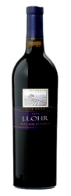 |
J. LOHR LOS OSOS MERLOT 2003
Paso Robles
Tasting Note: Nice and rich, this is a layered, complex wine with
cassis, cherry and coffee flavors that finish very dry, with soft but
fine tannins. The wine has obvious refinement and pedigree. There's a
bit of sharpness that should mellow over the next year or two. Score - 88. (Steve Heimoff, Wine Enthusiast, Dec. 1, 2006)
027516 (XD) 750 mL $21.95
|
| 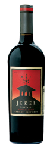 |
Exceptional Value
JEKEL CABERNET SAUVIGNON 2003
Central Coast
Packed
with classic blackberry and ripe cherry flavours with notes of spice,
herbs and toasty oak, this attractive Cab represents an incredible
value. It won a Gold Medal at the 2006 Los Angeles County Fair Wine
Competition. Enjoy it over the next 2-3 years with grilled New York
steaks.
967893 (XD) 750 mL $16.95
|
| 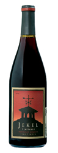 |
JEKEL PINOT NOIR 2005
Monterey County
Packed
with strawberry, and dark stone fruit character, this lively Pinot Noir
offers excellent value. Winemaker Charlie Gilmore sources fruit from
several vineyards, including Jekel's well-known Gravelstone vineyard,
to craft this rich and well-balanced wine. This bright beauty is a
terrific value and would pair well with pork tenderloin or grilled tuna
steaks.
027268 (D) 750 mL $23.95
|
| 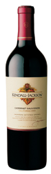 |
KENDALL-JACKSON VINTNER'S RESERVE CABERNET SAUVIGNON 2004
Sonoma, Napa, and Mendocino Counties
Tasting Note: ... There are about 161,000 cases of this cuvee.
Elegant, sweet red and black currant notes intermixed with spicy
vanillin are found in this excellent, medium-bodied Cabernet. With
sweet tannin and good underlying freshness, it will provide tasty
drinking over the next 4-5 years. Score - 87. (Robert Parker Jr., www,erobertparker.com, Dec. 2006)
331603 (XD) 750 mL $19.95
|
| 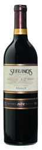 |
ST. FRANCIS MERLOT 2002
Sonoma County
St.
Francis' winemakers crafts this ready-to-drink Merlot with grapes that
are hand-picked at the peak of ripeness. Lush with deep concentrated
cherry and plum fruit flavours and hints of mocha and toasty oak, this
creamy, mouthfilling red is a crowd-pleaser for even the most
discerning crowd.
422014 (XD) 750 mL $24.95
|
|
|
|
|
|
|
| 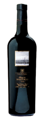 |
New at VINTAGES
FINCA FLICHMAN PAISAJE DE BARRANCAS 2002
Mendoza
Tasting Note: From Flichman Barrancas vineyards, some 700 meters
above sea-level comes Paisaje de Barrancas a 75/20/5 blend of
syrah/merlot/cabernet sauvignon ... Look for a massive white pepper,
licorice/garrigue nose with minty, black berry jam and mocha notes. The
entry is fat ripe, rich and dry with good concentration and some tight
tannin but balanced. Loads of black olive, black pepper, menthol,
chocolate, black berry jam mixes with smoky, meaty flavours. A touch
warm and rustic on the finish but has great fruit intensity. Needs 2-4
years of ageing in bottle to reach its potential. Score - 91. (Anthony Gismondi/Stuart Tobe, www.gismondionwine.com, Nov. 13, 2006)
017129 (XD) 750 mL $16.95
|
| 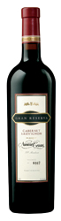 |
Food & Drink Discovery
NAVARRO CORREAS GRAN RESERVA CABERNET SAUVIGNON 2003
Mendoza
Tasting Note: Deep, concentrated dark fruit aromas. Still solid
tannins but ripe and full. Oak is to the fore but there is sufficient
depth of fruit to ensure another two years. Drink up to 2008. Score - **** (out of 5). (www.decanter.com, Dec. 2006)
028936 (XD) 750 mL $17.95
|
| 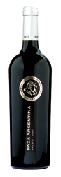 |
Exceptional Value
RAZA ARGENTINA MALBEC 2004
Famatina Valley
(La Riojana Co-op)
Tasting Note: Nice and spicy, with exotic aromatics like citrus
peel, coriander and browned butter. Of course, there's solid berry
fruit in there as well. Seems a touch pastry-like in the mouth, where
sugars and cream come in waves. Chunky in the long run, but fun and
big. Score - 86. (Wine Enthusiast, Nov. 1, 2006)
017038 (XD) 750 mL $14.95
|
| 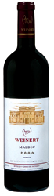 |
WEINERT MALBEC 2000
Mendoza
Tasting Note: There's plenty of newworld muscle in this Argentine
malbec – yet it's also closer in style to a Cahors than some of
Argentina's dark, alcoholic bruisers. Almost like a claret, there is a
smoky depth to the fruit and lovely fullness to the finish. (Andrew Neather, Evening Standard London, Nov. 23, 2005)
556795 (XD) 750 mL $15.95
|
|
|
|
|
|
|
| 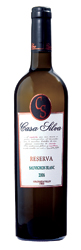 |
CASA SILVA RESERVA SAUVIGNON BLANC 2006
Colchagua Valley
Viña
Casa Silva is a family-run winery where everyone is involved in the
daily activities of the company. The Silva family have a long and proud
tradition of winemaking in the Colchagua Valley dating back to the 19th
century. This refreshing Savvy has loads of grapefruit and citrus peel
aromas and flavours as well as zesty acidity and a long finish. Enjoy
as an aperitif or with pan-seared scallops.
024216 (XD) 750 mL $14.95
|
|
|
|
|
|
|
| 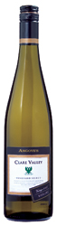 |
ANGOVE'S VINEYARD SELECT RIESLING 2005
Clare Valley, South Australia
Tasting Note: Well made Riesling from Australia's Clare Valley is
one of the world's most versatile, food-friendly wines, and this is
certainly a well made rendition. Based on vivid fruit with green apple
and lime notes, it is dry but very expressive in aroma and flavor.
Zesty acidity lifts and freshens the fruit and greatly prolongs the
finish, making this a great warm weather sipper but also a promising
partner for a very wide range of foods. Score - 88. (Michael Franz, www.winereviewonline.com, 2006)
597054 (XD) 750 mL $18.95
|
| 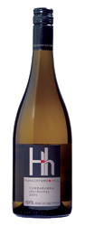 |
HUNGERFORD HILL CHARDONNAY 2005
Tumbarumba, New South Wales
This
elegant, Burgundian-style Chardonnay took the trophies for Wine of the
Year and Best Young Dry White at the New South Wales Wine Awards 2006.
Tumbarumba, in addition to being fun to say, is a cool climate region
located in the Snowy Mountains, part of the Australian Alps, with
vineyards at elevations between 300-800 meters. Complex and full
flavoured, this wine features pear and nectarine fruit flavours
integrated with nutty oak notes.
015479 (D) 750 mL $22.95
|
| 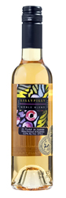 |
New at VINTAGES
LILLYPILLY NOBLE BLEND 2002
Riverina, New South Wales This
award-winning stunner is a blend of 80% Sauvignon Blanc, 10% Semillon,
5% Muscat of Alexandria and 5 % Riesling. All of the selected grapes
are Botrytis affected, leading to a natural sweetness in the finished
wine.
Tasting Note: Has
richness and depth without excessive sweetness, delivering delicious
apricot, honey and creamy vanilla flavors that linger on the refined
finish. ... Drink now through 2020. Score - 89. (Harvey Steiman, www.winespectator.com, May 15, 2005)
015255 (S) 375 mL $21.95
|
| 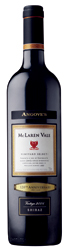 |
ANGOVE'S VINEYARD SELECT SHIRAZ 2004
McLaren Vale, South Australia
Tasting Note: Another big, older-style shiraz. Oak looks good and
supports some lovely sweet varietal fruit. “Good to see a wine that has
been given the time it needs to reach its potential before being
bottled,” noted one judge. Score - ***** (out of 5). (Winestate Magazine, Sept/Oct 2006)
660027 (XD) 750 mL $20.95
|
| 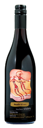 |
HEATH WINES SOUTHERN SISTERS RESERVE PINOT NOIR 2003
Adelaide Hills, South Australia
This
award-winning Pinot offers terrific value. It has a great nose
featuring lovely delicate cherry fruit and toasty oak notes from time
spent in new and one-year-old French oak. Enjoy it with veal chops or
glazed ham.
015487 (D) 750 mL $18.95
|
| 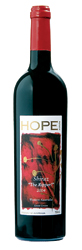 |
HOPE ESTATE “THE RIPPER!” SHIRAZ 2004
Western Australia
Tasting Note: Has refined texture and claretlike tannins. Offers
lovely blueberry, plum and spice flavors that last beautifully into the
long finish. Best from 2008 through 2014. Score - 89. (Harvey Steiman, www.winespectator.com, Nov. 15, 2006)
686865 (XD) 750 mL $19.95
|
| 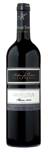 |
KATNOOK ESTATE SHIRAZ 2003
Coonawarra, South Australia
Tasting Note: Spice, cedar and polished leather aromas and
flavours surround the core of black fruit; a super-elegant style; very
good length and mouthfeel. Cork [closure]. Score - 94. (James Halliday, Australian Wine Companion 2007)
938225 (XD) 750 mL $29.95
|
| 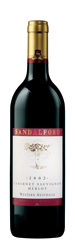 |
SANDALFORD CABERNET MERLOT 2002
Western Australia
Tasting Note: Really spicy Cabernet nose. This has all the
elements one looks for in mature Cabernet Sauvignon but will still last
long. Drink up to 2016. Score - *** (out of 5). (www.decanter.com, 2006)
660951 (XD) 750 mL $24.95
|
|
|
|
|
|
|
| 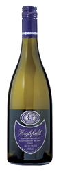 |
HIGHFIELD SAUVIGNON BLANC 2005
Marlborough, South Island
Tasting Note: Moderately concentrated with weight and herbal
flavours that fall into the riper end of the spectrum – lemongrass and
red capsicum. Vibrant, high-toned sauvignon blanc in a strongly
varietal style. Score - 95. (Bob Campbell MW, Australian Gourmet Traveller Wine, Feb/March 2006)
012674 (XD) 750 mL $23.95
|
 |
WAIRAU RIVER SAUVIGNON BLANC 2005
Marlborough, South Island
Tasting Note: Intense and squeaky clean. Very fresh and zingy on
the palate, lots of classic sweaty, grassy notes on nose, great
intensity, very good example. Score - **** (out of 5). (www.decanter.com, June 2006)
014340 (XD) 750 mL $19.95
|
| 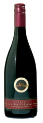 |
New at VINTAGES
KIM CRAWFORD CABERNET FRANC 2004
Hawke's Bay, North Island Kiwi
Cabernet Franc is a rare find in our market, so this flavourful wine
from one of New Zealand's finest winemakers is a great opportunity to
try something unusual from this wine-producing country.
Tasting Note: Grown mostly in the company-owned vineyard at Te
Awanga and matured for 10 months in seasoned American oak casks, the
2004 vintage is full-coloured, with vibrant plum and red-berry flavours
and a restrained oak influence in a fresh, smooth, fruit-driven style.
Score - *** (out of 5). (Michael Cooper, Buyer's Guide to New Zealand Wines 2007)
017392 (XD) 750 mL $22.95
|
| 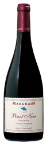 |
New at VINTAGES
MARGRAIN HOME BLOCK PINOT NOIR 2004
Martinborough, North Island
Tasting Note: This is typically an impressive Martinborough red.
The 2004 vintage, the first to be labelled ‘Home Block', is based on
‘vines from our original plantings which surround the winery'. Matured
for a year in French oak barriques (35 per cent new), it has a fresh,
spicy, bouquet leading into a vibrantly fruity palate with strong,
ripe, plum and spice flavours and balanced toasty oak. It's an elegant,
supple wine, maturing gracefully and drinking well now. Score - **** (out of 5). (Michael Cooper, Buyer's Guide to New Zealand Wine 2007)
020503 (D) 750 mL $38.95
|
| 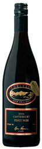 |
TORLESSE PINOT NOIR 2004
Canterbury, South Island
Torlesse
is full of surprises. By Waipara standards, it's been making wine for a
long time. The winery seems to pull a stunner out of the bag almost
every year. One year it might be chardonnay, the next riesling and
then, bingo, a terrific pinot noir. (Bob Campbell MW, Australian Gourmet Traveller Wine, Dec. 2005/Jan. 2006)
699330 (D) 750 mL $19.95
|
|
|
|
|
|
|
| 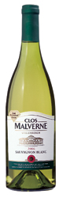 |
CLOS MALVERNE SAUVIGNON BLANC 2006
WO Stellenbosch
The
Pritchard family credit much of their winery's success over the past
decade to winemaker/viticulturalist I.P. Smit, who joined the team in
1997. His work in the vineyards and dedication to quality have allowed
Clos Malverne's wines to reach a whole new level. This award-winning
Sauvignon is zesty and refreshing with intense gooseberry, lime and
grapefruit aromas and flavours. Enjoy as an aperitif or serve with
grilled shrimp.
024166 (XD) 750 mL $16.95
|
 |
New at VINTAGES
IONA SAUVIGNON BLANC 2005
WO Elgin
Tasting Note: Elgin is old apple growing country, which can often
become good wine-growing territory. A notable pioneer was Iona which
continues to make some of South Africa's most delicate, most mineral of
Sauvignons. Iona Sauvignon Blanc 2005 Elgin smells of exotic green
fruits and then has grass, minerals and a certainly chalkiness on the
palate which finishes with admirable dryness. (Wines of the Week, Jancis Robinson, www.jancisrobinson.com, Jun. 27, 2006)
027862 (XD) 750 mL $17.95
|
| 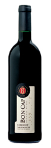 |
Organic product
BON CAP ORGANIC CABERNET SAUVIGNON 2003
WO Robertson Our Quality Assurance Laboratory has determined that this wine contains 6 mg/L of free sulphur.
Tasting Note: 2003 continues neatly-tailored style; ripe
brambleberry, cassis bound by mouth-coating tannin; honestly dry.
Barrel matured. Fruit quality of these organically grown wines
impresses. Score - ***1/2 (out of 5). (Irina von Holdt, John Platter's South African Wines 2006)
011064 (XD) 750 mL $19.95
|
| 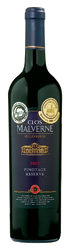 |
CLOS MALVERNE PINOTAGE RESERVE 2003
WO Stellenbosch
Among
its many accolades, this wine won a Gold Medal at the prestigious
Concours Mondial de Bruxelles 2006 and was also named as one of the top
10 Pinotage wines of the year in 2006 by South Africa's Pinotage
Association. Full-bodied and brooding with dark fruit and gripping
tannins, savour it with roast lamb or beef or put it away for 2 to 3
years.
024182 (XD) 750 mL $17.95
|
| 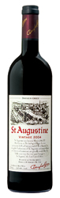 |
Exceptional Value
ST. AUGUSTINE 2004
WO Western Cape
(Douglas Green)
This
proprietary red blends Cabernet Sauvignon, Merlot and Shiraz and,
according to John Platter South African Wines 2006, lays claim to the
title of most popular South African red wine since the 1940s. Ripe and
round, this full-bodied red is packed with juicy berry fruit and notes
of toasty oak. Enjoy with pasta in a tomato meat sauce.
652628 (XD) 750 mL $13.95
|
|
|
|
|
|
|
| Alsace |
| 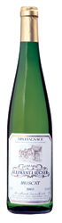 |
ALLIMANT-LAUGNER MUSCAT 2005
AC Alsace
(Hubert Laugner)
As
a child, I followed my parents around the production areas and I was
fascinated even then by all the magic which surrounds the convivial
world of wine. Later on they taught me the vocabulary and then the
actual science of understanding wine. They taught me that tasting wine
is both an art and a vocation. Today, I believe in the immense wisdom
and intelligence of the winemaker based on observation, patience and
the search for beauty. (Hubert Laugner, www.isasite.net/allimant-laugner/) Laugner's patience has paid off with this aromatically-intense Muscat. Match it to spicy Asian seafood dishes.
021279 (MD) 750 mL $16.95
|
| 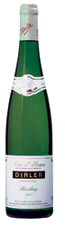 |
Organic product
DIRLER RIESLING 2004
AC Alsace
(Dirler-Cadé Earl, Vitic.)
Dirler-Cadé
have embraced the dictates of biodynamic farming. The resulting wines
demonstrate superior Riesling aroma profiles of peach, pear and citrus.
On the palate, it is a near perfect balance between the fruit and
acidity. Made for substantial ageing (4-6 years), it can also be
enjoyed tonight with a variety of fish, seafood and poultry dishes.
021337 (D) 750 mL $18.95
|
| 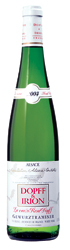 |
DOPFF & IRION GEWURZTRAMINER LA CUVÉE RENE DOPFF 2004
AC Alsace
This
is a premium Gewurz with loads of personality, the aromas suggest
peach, lychee nut, nutmeg and grapefruit. It is dry and rich with a
full body and a lingering finish. An excellent choice for grilled
salmon steaks.
021352 (D) 750 mL $25.95
|
| 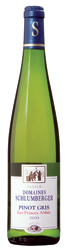 |
SCHLUMBERGER PINOT GRIS LES PRINCES ABBÉS 2003
AC Alsace
Alsatian
Pinot Gris deliver some of the most flavourful interpretations of the
grape there is, and this one is no exception. The aromas recall
tropical fruit and floral tones. It is fat and rich on the palate with
a core of acid for balance. Will match with Thai dishes, such as spicy
noodles with lemongrass chicken.
021253 (D) 750 mL $20.95
|
| Bordeaux |
| 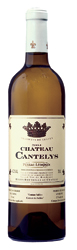 |
CHÂTEAU CANTELYS BLANC 2004
AC Pessac-Léognan
(D. Cathiard, Prop.)
Château
Cantelys is owned by the Cathiard family. Their most famous property is
Château Smith Haut-Lafite. This is the white partner to the red
(019786), also available in this release.
Tasting Note: Barrel tasting. Rich and powerful, with lots of
lemon, vanilla and honey character. Full-bodied, with a medium
finish. Score - 89-91. (James Suckling, www.winespectator.com, June 30, 2005)
019778 (XD) 750 mL $36.95
|
| Jura |
| 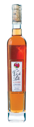 |
HENRI MAIRE VIN DE PAILLE LA VIGNIÈRE 2002
AC Côtes du Jura
The
grapes used in Vin de Paille wines – Chardonnay, Savagnin, Poulsard and
Trousseau – must be dried for at least 45 days before pressing. The
must once pressed is very sweet and can sometimes take up to a year and
a half to ferment. The wine can only be naturally sweet, not fortified,
and must have a minimum alcohol content of 14.5% by volume. The French
term for the drying process is passerillage. This wine exhibits aromas
of dried fruit, nuts, beeswax and honey. It is sweet, ripe and round
with excellent aroma replays. It is long finishing and would be a great
partner for nuts.
703140 (S) 375 mL $36.95
|
| Loire |
| 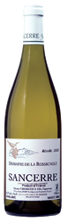 |
DOMAINE DE LA ROSSIGNOLE SANCERRE 2005
AC
(Pierre Cherrier & Fils, Vign.)
Tasting Note: Good, stylish Sauvignon Blanc with aromas of grass,
lemon/lime and fresh sage. It is dry, tangy and fresh. Medium-bodied
and long finishing, try it with spicy shrimp dishes. (VINTAGES panel, June 2006)
982421 (XD) 750 mL $24.95
|
| Rhône |
| 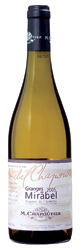 |
M. CHAPOUTIER GRANGES DE MIRABEL VIOGNIER DE L'ARDECHE 2005
Vin de Pays des Coteaux de l'Ardèche
Tasting Note: Floral and peach aromas dominate this well-made
Viognier. It is dry with a pleasant, round mouth-feel. It is
medium-full bodied with a medium long, crisp/fruity finish. Enjoy with
sushi or crab legs. (VINTAGES panel, June 2006)
017285 (D) 750 mL $20.95
|
| Bordeaux |
| 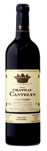 |
CHÂTEAU CANTELYS 2003
AC Pessac-Léognan
(D. Cathiard, Prop.)
Their white Château Cantelys, (019778) is also available in this release.
Tasting Note: Aromas of blackberry, meat and spice follow through
to a full-bodied palate, with velvety tannins and a long, flavorful
finish of berry, orange peel and chocolate. Structured and complex.
Superclean. Best ever from here. Best after 2009. Score - 92. (James Suckling, www.winespectator.com, March 31, 2006)
019786 (XD) 750 mL $36.95
|
| Beaujolais |
| 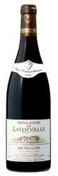 |
DOMAINE DE LATHEVALLE MORGON 2005
AC
(Mommessin S.A.)
Domaine
de Lathevalle is a highly respected 10-hectare property ideally
situated in one of Morgon's finest locations. The crisp and fruity
Gamay displays aromas of strawberry, mineral and a hint of peppermint.
It is dry with a very good balance between the fruit and acid. This is
a Gamay that will age gracefully for 1-3 years, or enjoy it tonight
with stuffed veal tenderloin.
420257 (D) 750 mL $18.95
|
| Midi |
 |
CHÂTEAU DU PRIEURÉ DES MOURGUES 2003
AC Saint-Chinian
(Vignobles Roger)
One
of Saint-Chinian's strongest producers, Château du Prieuré des Mourgues
takes Syrah, Grenache and Mourvèdre and barrel ages them separately for
12 months. The final blend accentuates the fruit of the Syrah with the
pretty cedar tones of the Grenache, the backbone of the Mourvèdre, plus
the vanilla from the oak to create this finely made, food-friendly
wine. Match it to grilled leg of lamb with garlic and rosemary.
985598 (XD) 750 mL $15.95
|
| 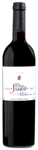 |
MAS JANEIL CÔTES DU ROUSSILLON-VILLAGES 2004
AC
(Jacques & François Lurton)
The
Bordeaux-based Lurton brothers have been venturing into the Midi for
some years now, producing exciting, quality-priced wines such as this.
Grenache (60%), Carignan (30%) and Syrah (10%) contribute aromas of
raspberry and red currants with notes of spice, pepper and chocolate.
There is great fruit concentration and well-integrated oak in this
fresh, full-bodied wine. A fantastic value. Match it to grilled steaks
or portobello mushrooms.
992800 (XD) 750 mL $16.95
|
| Rhône |
 |
BEAUMALRIC BEAUMES-DE-VENISE ROUGE 2004
AC
After
many years of being labelled Côtes du Rhône-Villages for its red wines,
Beaumes de Venise received its own AC in 2005. The red wines are
generally made with a blend of mostly Grenache and Syrah, and seasoned
with Mourvèdre and Cinsault. The wines are often favourably compared to
nearby Gigondas. Enjoy this structure, fruit/cedar dominant wine with
roast beef with root vegetables.
017145 (XD) 750 mL $16.95
|
| 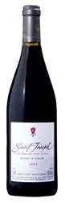 |
CAVE DE TAIN ESPRIT DE GRANIT SAINT JOSEPH 2003
AC
Saint
Joseph is one of Northern Rhône's undiscovered gems. Produced from 100%
Syrah, Saint Joseph wines are well-regarded for their fruit-forward
blackberry intensity and attractive pepper tones. They can age
beautifully, however, many 2003s, such as this, are really hitting
their stride now. Enjoy with rich lamb or beef dishes.
017152 (XD) 750 mL $27.95
|
| 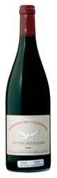 |
DOMAINE DU COLOMBIER CROZES-HERMITAGE 2005
AC
Until
1992, Florent Viale and his father sold all of their grapes to
négociants. As Crozes-Hermitage came into its own, the Viales decided
to make their own wines. The results have been nothing short of
spectacular. Layers of blackberry, tar and black pepper dominate their
finely made Syrah-based wines. A very good match for roast leg of lamb.
013300 (XD) 750 mL $26.95
|
| 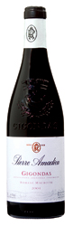 |
PIERRE AMADIEU GIGONDAS ROMANE MACHOTTE 2004
AC
Tasting Note: A blend of 85% Grenache and 15% Syrah grown in
limestone-based hillside vineyards, the 2004 Gigondas Romane Machotte
exhibits an impressive, fleshy, full-bodied, muscular personality with
copious quantities of black cherry and berry fruit intermixed with
flowers, crushed rocks, and pepper. It is a big, rich, dense Gigondas
to drink over the next 7-8 years. Score - 89-91. (Robert Parker Jr., www.erobertparker.com, Feb. 2006)
017400 (XD) 750 mL $23.95
|
|
|
|
|
|
|
| Baden |
| 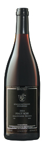 |
KÖNIGSCHAFFHAUSEN PINOT NOIR 2004
QbA Baden, Königschaffhauser Steingruble
Yes,
Germany does make red wine, and rather good ones at that. This
delicious Pinot is from one of Germany's most prestigious
co-operatives. It's dry, medium-bodied with ripe cherry and strawberry
flavours, spice and velvety tannins. Enjoy it with duck or veal chops.
Excellent value.
460410 (D) 750 mL $17.95
|
| 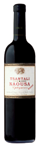 |
TSANTALI NAOUSA RESERVE EPILEGMENOS 2001
VOHQ Naoussa
Located
in northern Greece, the Naoussa region has developed a reputation for
producing superior red wines from the local Xinomavro grape. Xinomavro
has been compared to the Nebbiolo of Piedmont, and yet it has a totally
unique flavour and aroma profile. The producer suggests serving this
rich, balanced wine with beef stew, seared tuna or pasta with pepperoni
and olive oil.
653790 (XD) 750 mL $15.95
|
|
|
|
|
|
|
| Trentino |
| 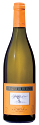 |
BOLLINI CHARDONNAY BARRICATO 40 2005
DOC Trentino
(Empson & Co.)
The
perfect Chardonnay for Every Day! Once the grapes are soft-pressed, 40%
of the juice is drawn off and aged in oak barriques for 4-5 months
(hence the name Barricato 40), then reunited with the stainless
steel-fermented portion. Its intriguing touch of oak is ideally
integrated with fresh citrus fruit aromas. Versatile, food-friendly,
exceptional value.
987503 (D) 750 mL $15.95
|
| 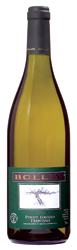 |
BOLLINI PINOT GRIGIO 2005
DOC Trentino
(Empson & Co.)
Tasting Note: Fresh, crisp mineral tones greet the nose, followed
by floral notes and lush exotic fruit. The mineral tones are almost
brackish in their intensity, which underlines this wine's excellent
food pairing potential. Try with stir-fry. Score - 88. (Monica Larner, Wine Enthusiast, June 1, 2006)
951319 (D) 750 mL $15.95
|
| Emilia-Romagna |
| 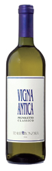 |
New at VINTAGES
TENUTA BONZARA VIGNA ANTICA PIGNOLETTO CLASSICO 2005
DOC Colli Bolognesi Classico
Pignoletto
is one of the most important white grapes in Emilia-Romagna that makes
a lively, crisp wine. The best versions, such as this example, are
grown in the Pignoletto Classico DOC near the town of Bologna. This is
a friendly, palate-refreshing starter wine.
013409 (XD) 750 mL $16.95
|
| Sicily |
| 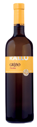 |
New at VINTAGES
CANTINE RALLO GRILLO 2005
IGT Sicilia
Tasting Note: Candied plum, citrus and orange blossom aromas tease
the nose. It is a light, dry and gentle style, but fresh with lively
acidity and good persistence on the finish. An easy-drinking,
food-friendly white that will pair well with a variety of antipasti.
Great value. (VINTAGES panel, June 2006)
013268 (XD) 750 mL $14.95
|
| Trentino |
|
BOLLINI MERLOT 2004
DOC Trentino
(Empson & Co.)
Tasting Note: A well crafted merlot to match with stews or chili
this winter. Cherry, blueberry, dark chocolate and a touch of pepper on
the nose. Well rounded on the palate with a combination of berry fruit
and chocolate coming in at medium intensity. Good length. Drink up.
Score - 86. (Jefferson Davis, Wine Access, “First In Line E-Report”, March 2006)
717306 (XD) 750 mL $15.95
|
|
New at VINTAGES
LE MERIDIANE PINOT NOIR RISERVA 2003
DOC Trentino
Trentino
is proving an ideal home for Pinot Noir. The cool-climate here allows
for the kind of slow, easy ripening that this grape prefers. As a
result, the wine exhibits classic cherry, beetroot and earth aromas and
flavour. Try with pork tenderloin or grilled veal chops.
023002 (XD) 750 mL $17.95
|
| Piedmont |
|
ANTICHI VIGNETI DI CANTALUPO GHEMME 2001
DOCG
Nebbiolo
finds its most natural home in Piedmont. In the Ghemme region, Nebbiolo
produces wines that are riper, fuller-bodied and require much less
cellaring than the, perhaps, better-known versions of Barolo and
Barbaresco. It is a good match for simple beef dishes or something more
complex like pasta with shaved truffle.
650606 (XD) 750 mL $29.95
|
|
FONTANAFREDDA BARBERA D'ALBA RAIMONDA 2004
DOC
Fontanafredda,
the largest and, perhaps, oldest producer in Piedmont, has recently
emerged as one of the region's premier wineries. With the 1996 vintage,
a new vision inspired replanting and refurbishment of the winery. In
1999 a new winemaker, Danilo Drocco, was hired. As this example
demonstrates, his Barberas are known for displaying ripe fruit made in
a polished, modern style. Match it to grilled sausage, meats or a
truffle risotto.
023135 (XD) 750 mL $15.95
|
| Puglia |
|
New at VINTAGES
SEGNA VENTO PRIMITIVO DI MANDURIA 2004
DOC
(Racemi s.r.l.)
Primitivo
is Zinfandel's Italian twin. This Italian interpretation has lively
aromas of blackberry, damson plum and pears poached in wine. Dry and
mouthfilling, it is smooth, almost velvety in texture. There is very
good balance here with a good streak of acid and a fine tannin core for
mid-term ageing (3-5 years), or enjoy it tonight with a rare grilled
steak.
023143 (XD) 750 mL $19.95
|
| Sicily |
|
DONNAFUGATA SEDÀRA NERO D'AVOLA 2004
IGT Sicilia
The
world of Italian cinema brushes up against this wine. Sedàra was
Claudia Cardinale's character's name in Luchino Visconti's 1963 film, The Leopard.
The film was supposedly loosely based on the family who owned this
winery. The wine lives up to the name of the film, with an assertive
fruitiness giving this delicious wine real teeth. It would complement a
rare steak.
900274 (D) 750 mL $15.95
|
| Tuscany |
|
BANFI CENTINE 2004
IGT Toscana
An
eminently quaffable red with loads of black fruit and a hint of
vanilla. It is dry and fruity, with a hint of tannin for some pretty
balance. Enjoy it tonight with grilled steak or rich meat-based pasta
sauce.
947440 (D) 750 mL $16.95
|
|
BIONDI-SANTI SASSOALLORO 2004
IGT Toscana
The
special clone of Sangiovese that allowed the area and appellation of
Brunello di Montalcino to develop was identified in the 19th century by
the Biondi-Santi clan. They continue to innovate with this grape. This
100% Sangiovese is aged for at least 14 months in new French barriques.
The resulting wine will reward short-term cellaring (1-3 years), but is
also enjoyable now with roast beef due to its lovely fruit core that is
surrounded by silky tannins.
981407 (XD) 750 mL $34.95
|
|
CEPPETO CHIANTI CLASSICO 2004
DOCG
(Az. Agric. Mannucci-Droandi)
In
2005, the Gambero Rosso Italian Wines guide panel remarked: “Roberto
Droandi's wines reveal a strong territorial bond and a light hand in
the cellar.” Rich, full-bodied with tantalizing blackberry and dark
chocolate flavours, this wine is a true expression of the Gaiole
terroir in the Chianti Classico zone. Perfect with meat lasagna or
steak.
685131 (XD) 750 mL $20.95
|
|
TENUTA SAN GUIDO SASSICAIA 2003
DOC Bolgheri-Sassicaia
Tasting Note: Lots of raspberry and cherry on the nose.
Full-bodied and chunky with lots of fruit and a long, velvety finish.
Hints of new wood. Big and juicy Sassicaia. Very well done for the
vintage. Best after 2008. Score - 92. (James Suckling, www.winespectator.com, July 31, 2006)
480533 (XD) 750 mL $159.00
|
|
|
|
|
|
|
| |
QUINTA DA ALORNA CASTELÃO VINHO TINTO 2002
DOC Ribatejo
Castelão,
a.k.a. Periquita, is a very versatile wine that may be enjoyed in its
youth for its bright fruitiness. Older vintages deliver more elegant,
dried fruit qualities. This example falls gracefully into the latter
category. Enjoy with grilled lamb.
021287 (XD) 750 mL $16.95
|
|
BODEGAS NÙÑEZ ANDIÓN ALBARIÑO 2005
DO Rías Baixas
This
refreshing Albariño would match beautifully with baked fish in a light
cream sauce or a curried shrimp dish. It's dry and medium bodied with a
hint of refreshing tropical fruit aromas and flavours as well as zesty
acidity.
023788 (D) 750 mL $17.95
|
|
Wine of the Month
BODEGAS FONTANA GRAN FONTAL RESERVA TEMPRANILLO 2001
DO La Mancha
Spain's
La Mancha appellation is known for its extremely hot temperatures but
in the last decade it has overcome this challenge to breakthrough as a
serious winegrowing region. Established in 1997, Bodegas Fontana is
leading the pack of quality winemakers that are now capitalizing on the
region's potential. Fontana has succeeded by doing its homework. They
carefully researched to determine which vines to plant where in order
to take full advantage of the region's vagaries of weather. According
to John Radford, in his 2004 edition of The New Spain, “Quality is
high.” Don't just take his word for it though, experience it for
yourself with Fontana's Gran Fontal Reserva Tempranillo. It boasts
lovely aromas of strawberry, raspberry, cinnamon, spice and Christmas
cake. Dry and well-balanced, it's ready-to-drink with braised meat
dishes and will also improve in a cellar for 2-4 years.
028118 (XD) 750 mL $19.95
|
|
CONDESA DE LEGANZA RESERVA 1998
Finca Los Trenzones, Estate Btld., DO La Mancha
This
polished, solidly structured red is 100% Tempranillo. Its bouquet is
loaded with ripe fruit and pleasing notes of toast, leather and
chocolate. Delicious now with leg of lamb or hard cheeses, but this
wine will also reward short-term cellaring.
658450 (D) 750 mL $13.95
|
|
COSME PALACIO Y HERMANOS TINTO 2004
DOC Rioja
A
Wine Spectator “Editor's Daily Wine Pick” (September 2006). This
Spanish red is packed with cherry and strawberry aromas and accented
with lovely hints of oak. A velvety, expressive and medium-bodied wine
that will make a delectable match with roast beef.
237834 (D) 750 mL $17.95
|
|
FINCA ANTIGUA CRIANZA 2003
DO La Mancha
Spain's
La Mancha region is gaining a reputation for its good value reds. Here
is a delicious blend of Tempranillo (50%), Cabernet Sauvignon (20%),
Merlot (20%) and Syrah (10%). This medium-bodied Crianza displays
intense berry fruit aromas and well-integrated vanilla oak notes. A
great match with sausages and shish kebabs.
981613 (D) 750 mL $14.95
|
|
New at VINTAGES
MANGA DEL BRUJO 2004
DO Calatayud
(Bodega San Gregorio)
Tasting Note: This intriguing blend of Grenache, Tempranillo,
Shiraz, Mazuelo and Monastrell produces exquisite aromas of
pomegranate, red currant, candied sweet ripe fruit and notes of dried
figs, tar and leather. This medium-bodied, easy-drinking red is great
value for the money. Enjoy with veal marsala or rack of lamb. (VINTAGES panel, May 2006)
015073 (D) 750 mL $16.95
|
|